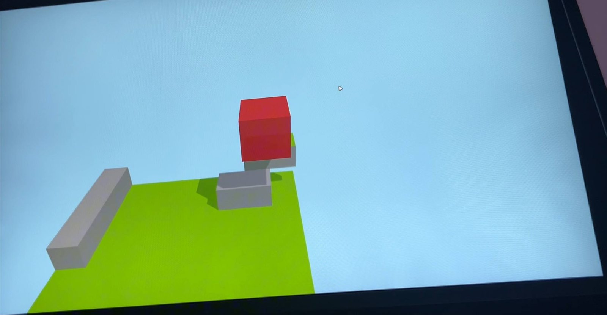
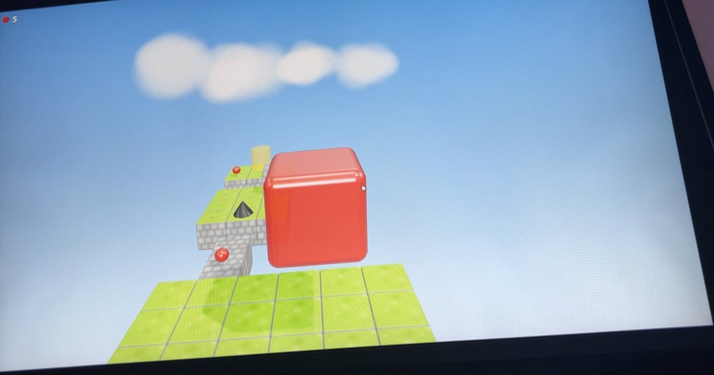
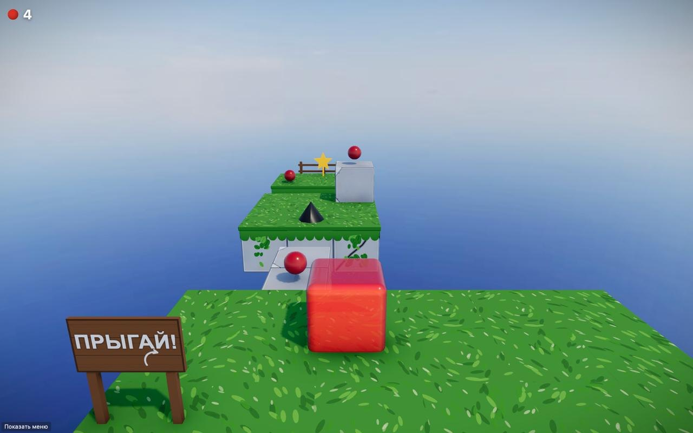
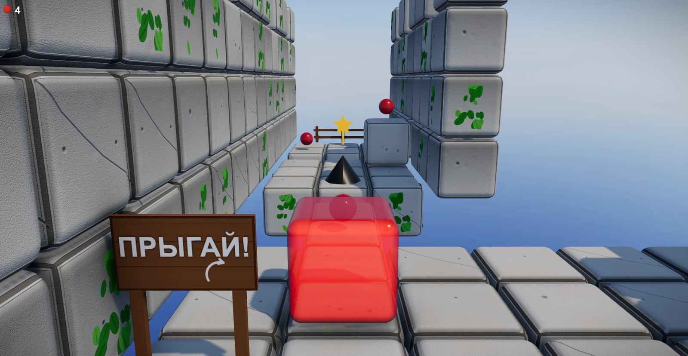

Пять скриншотов моей игры. Первый снят на телефон, потому что скриншотить я не догадался
У меня сохранилась вся визуальная эволюция проекта - от красного кубика на зелёной плоскости до желейного куба на каменных плитах. Два самых ранних кадра существуют только как фотографии монитора: тогда мне не приходило в голову, что через неделю это будет интересно кому-то ещё, включая меня самого.
Игра - браузерный 3D-платформер на Three.js и Rapier. Ниже пять состояний, что менялось между ними и какая правка дала больше всего эффекта на единицу усилий. Спойлер: самая выгодная - две строки в конфиге камеры.
Шаг 1. Красный ящик на зелёной плоскости

Вот с этого всё началось. Красный MeshStandardMaterial, зелёная плоскость, пара серых боксов и голубой фон по умолчанию.
Смотреть тут не на что, но это единственный кадр, где видно, что игра вообще завелась: куб стоит там, где написано в JSON, камера едет за ним, физика держит его на платформе, а не роняет сквозь неё. Для первого дня - полный успех.
Первое неочевидное открытие случилось прямо здесь: следящую камеру надо сглаживать. Жёстко привязанная к кубу камера повторяет каждое дрожание физического тела, и картинка мелко трясётся. Играть в это невозможно, а понять, почему тошнит, не сразу получается.
Шаг 2. Скругление, облака и первая попытка в красоту

RoundedBoxGeometry вместо параллелепипеда, глянец на кубе, облака, трава с текстурой, серый кирпич. Появились шип-конус и капли массы - то есть правила игры уже работают.
И вот тут я впервые понял, насколько сильно скругление и блик меняют восприятие объекта. Куб перестал быть примитивом из туториала и стал похож на предмет. Геометрии в нём прибавилось на пару десятков полигонов.
Шаг 3. Небо, отражающееся в полу

Здесь я подключил окружение как источник освещения - и получил зеркало. Внизу кадра прекрасно видно облака, отражающиеся в траве. Это не задумка, это дефолтные настройки, которые я поленился тронуть.
Ещё на этом кадре видны белые швы между плитками. Каждый тайл - отдельный объект, и границы между ними заметны невооружённым глазом. Физический движок, как выяснилось тем же утром, видит их не хуже вас: куб об эти швы спотыкался. Но это уже отдельная история.
Плюс соседние тайлы идентичны до пикселя. Глаз моментально считывает такое как «сетка», а не как «мир».
Шаг 4. Мультяшная трава и таблички

Трава получила объём и свес по краям платформы, добавился плющ, а главное - деревянные таблички прямо в мире. Это осознанное решение: обучение подсказками в сцене, а не всплывающими окнами с текстом, которые никто не читает.
Табличка «ПРЫГАЙ!» со стрелкой заменяет собой абзац туториала и работает лучше любого абзаца туториала.
Шаг 5. Желе и каменный коридор

Куб стал настоящим желе: полупрозрачным, с резким бликом, с вмятинами, сплющивается при приземлении. Плиты - настоящий камень с фаской, трещинами и плющом, и соседние блоки друг на друга больше не похожи. Камера опустилась почти к самому кубу.
Дальше - что из этого списка реально сработало.
Что дало больше всего эффекта
Камера. Две строки конфига
Готов спорить, что это самая выгодная правка за весь проект:
cameraOffset: { x: 0, y: 1.5, z: 3.8 },
cameraLookAhead: { y: 0.35, z: -1.6 },Было y: 2.4, z: 4.4 - вид сверху на площадку. Стало - камера почти на уровне куба и придвинута вплотную, кадр превратился в узкий каменный коридор со стенами, уходящими вверх за край экрана.
Ни одного нового полигона, ни одной новой текстуры. Просто другой жанр картинки.
Мораль, которую я записал себе на будущее большими буквами: прежде чем неделю воевать с материалами, подвигай камеру.
Соседние блоки перестали быть близнецами
Требование от владельца проекта прилетело сразу и звучало жёстко: соседние каменные блоки не должны выглядеть одинаково. На третьем кадре видно, почему: одинаковые тайлы складываются в таблицу, и мозг видит Excel, а не стену.
Решается вариантом камня по детерминированному хэшу от координат тайла. Подчёркиваю - детерминированному, никакого Math.random в размещении. Иначе уровень выглядел бы по-новому при каждой перезагрузке, а скриншотные тесты сошли бы с ума и утащили меня за собой.
Контактная тень под кубом
Самый выгодный эффект по соотношению «результат / усилия» во всём проекте.
Посмотрите на первый кадр: куб не стоит на траве, он над ней висит. Лечится плоскостью с радиальным градиентом под кубом, прозрачность которой зависит от высоты над землёй. Кода - десяток строк. Ощущение - как будто объект наконец опустили в сцену, а не положили поверх скриншота.
Если у вас что-то в 3D выглядит парящим, начните с тени под ним, а не с материала на нём.
Небо, которое ещё и светит
К пятому кадру небо стало реальной панорамой и работает источником освещения через IBL: камень получает мягкий естественный свет вместо плоской заливки.
За это прилетела расплата. Синее небо начало отражаться в верхней грани красного куба, и она уехала в мадженту. Лечилось снижением интенсивности отражения окружения втрое, и это отдельная история - там я в итоге полез читать исходники шейдеров, чтобы понять, почему полумеры не помогают.
Процедурные текстуры как черновик
Отдельно про то, чего на кадрах не видно.
Текстуры камня, травы, неба и облаков со второго по четвёртый кадр сгенерированы кодом - ни одного файла-картинки. Не из принципа: я тогда просто не знал, какой именно камень мне нужен, а подбирать готовый ассет вслепую - гадание. Процедурную текстуру можно крутить параметрами прямо в коде и смотреть, куда она едет.
Когда стало понятно, что нужно, процедурный камень заменился на настоящий PBR-набор. Это не поражение генератора, это нормальный порядок: сначала черновик, который меняется за секунду, потом финальный ассет под уже понятную задачу.
Что я вынес
Серый этап надо проходить быстро, но честно. Соблазн начать с красивого огромный. Но пока не работают правила, красота - это украшение неработающей игры.
Дешёвые правки часто выигрывают у дорогих. Камера и тень под кубом дали больше, чем любой шейдер, и обошлись в десятки строк.
Одинаковость читается как ошибка. Повторяющийся тайл выдаёт, что мир собран из кубиков, даже если сам кубик отрисован прекрасно.
Снимайте свои уродливые прототипы. Через неделю это единственное доказательство, что вы что-то сделали. Мне повезло, что я хотя бы сфотографировал экран телефоном.
Если у вас есть свой такой же стыдный ранний скриншот - покажите в комментариях. Такие пары «было и стало» полезнее любой статьи про то, как надо делать сразу правильно.